Fafnirog, the Void Dragon, is an abomination who slew the primal god Uzume at the behest of Kaos. He is sustained by devotion. Cloaked in silence and entropy, Fafnirog devours memory and unravels the divine, his presence marked by the omen of a black star that drains warmth from the world. His symbols—the Hollow Spiral, the Cracked Eye, and the Ashen Fang—embody hunger and erasure, while his rites demand silence, sacrifice, and the surrender of self. Worshiped by warlocks and others who crave unmaking, he is a hollow dragon of absence, eternally teetering between oblivion and godhood, feeding only on those who dare to bind themselves to his abyss.
